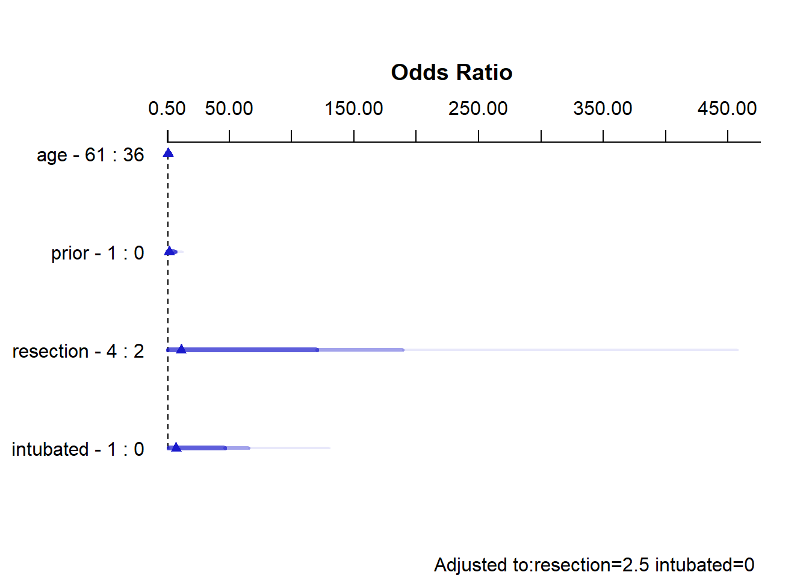

knitr::opts_chunk$set(comment = NA)
library(ROCR)
library(pROC)
library(naniar)
library(rms)
library(tidyverse)
theme_set(theme_bw())21 Logistic Regression with lrm
21.1 R Setup Used Here
21.1.1 Data Load
resect <- read_csv("data/resect.csv", show_col_types = FALSE) 21.2 Logistic Regression using lrm
To obtain the Nagelkerke \(R^2\) and the C statistic, as well as some other summaries, I’ll now demonstrate the use of lrm from the rms package to fit a logistic regression model.
We’ll return to the original model, predicting death using resection size alone.
dd <- datadist(resect)
options(datadist="dd")
res_modC <- lrm(died ~ resection, data=resect, x=TRUE, y=TRUE)
res_modCLogistic Regression Model
lrm(formula = died ~ resection, data = resect, x = TRUE, y = TRUE)
Model Likelihood Discrimination Rank Discrim.
Ratio Test Indexes Indexes
Obs 134 LR chi2 12.45 R2 0.167 C 0.771
0 117 d.f. 1 R2(1,134)0.082 Dxy 0.541
1 17 Pr(> chi2) 0.0004 R2(1,44.5)0.227 gamma 0.582
max |deriv| 2e-06 Brier 0.103 tau-a 0.121
Coef S.E. Wald Z Pr(>|Z|)
Intercept -4.4337 0.8799 -5.04 <0.0001
resection 0.7417 0.2230 3.33 0.0009 This output specifies the following:
Obs= The number of observations used to fit the model, with0= the number of zeros and1= the number of ones in our outcome,died. Also specified is the maximum absolute value of the derivative at the point where the maximum likelihood function was estimated. I wouldn’t worry about that practically, as all you will care about is whether the iterative function-fitting process converged, and R will warn you in other ways if it doesn’t.- A likelihood ratio test (drop in deviance test) subtracting the residual deviance from the null deviance obtain the Likelihood Ratio \(\chi^2\) statistic, subtracting residual df from null df to obtain degrees of freedom, and comparing the resulting test statistic to a \(\chi^2\) distribution with the appropriate degrees of freedom to determine a p value.
- A series of discrimination indexes, including the Nagelkerke \(R^2\), symbolized R2, and several others we’ll discuss shortly.
- A series of rank discrimination indexes, including the C statistic (area under the ROC curve) and Somers’ D (Dxy), and several others.
- A table of coefficients, standard errors, Wald Z statistics and p values based on those Wald statistics.
The C statistic is estimated to be 0.771, with an associated (Nagelkerke) \(R^2\) = 0.167, both indicating at best mediocre performance for this model, as it turns out.
21.2.1 Interpreting Nagelkerke \(R^2\)
There are many ways to calculate \(R^2\) for logistic regression.
- At the URL linked here there is a nice summary of the key issue, which is that there are at least three different ways to think about \(R^2\) in linear regression that are equivalent in that context, but when you move to a categorical outcome, which interpretation you use leads you down a different path for extension to the new type of outcome. In linear regression…
- You might think of \(R^2\) as a measure of the proportion of variability explained.
- You might think of \(R^2\) as measuring the improvement from a null model to a fitted model.
- You might think of \(R^2\) as the square of the correlation coefficient.
- Paul Allison, for instance, describes several at this link in a post entitled “What’s the Best R-Squared for Logistic Regression?”
- Jonathan Bartlett looks at McFadden’s pseudo \(R^2\) in some detail (including some R code) at this link, in a post entitled “R squared in logistic regression”
The Nagelkerke approach that is presented as R2 in the lrm output is as good as most of the available approaches, and has the positive feature that it does reach 1 if the fitted model shows as much improvement as possible over the null model (which predicts the mean response for all subjects, and has \(R^2\) = 0). The greater the improvement, the higher the Nagelkerke \(R^2\).
For model A, our Nagelkerke \(R^2\) = 0.167, which is pretty poor. It doesn’t technically mean that 16.7% of any sort of variation has been explained, though.
21.2.2 Interpreting the C statistic and Plotting the ROC Curve
The C statistic is a measure of the area under the receiver operating characteristic curve. This link has some nice material that provides some insight into the C statistic and ROC curve.
- Recall that C ranges from 0 to 1. 0 = BAD, 1 = GOOD.
- values of C less than 0.5 indicate that your prediction model is not even as good as simple random guessing of “yes” or “no” for your response.
- C = 0.5 for random guessing
- C = 1 indicates a perfect classification scheme - one that correctly guesses “yes” for all “yes” patients, and for none of the “no” patients.
- The closer C is to 1, the happier we’ll be, most of the time.
- Often we’ll call models with 0.5 < C < 0.8 poor or weak in terms of predictive ability by this measure
- 0.8 \(\leq\) C < 0.9 are moderately strong in terms of predictive power (indicate good discrimination)
- C \(\geq\) 0.9 usually indicates a very strong model in this regard (indicate excellent discrimination)
We’ve seen the ROC curve for this model before, when we looked at model res_modA fitted using glm in the previous chapter. But, just for completeness, I’ll include it.
Note. I change the initial predict call from type = "response" for a glm fit to type = "fitted" in a lrm fit. Otherwise, this is the same approach.
## requires ROCR package
prob <- predict(res_modC, resect, type="fitted")
pred <- prediction(prob, resect$died)
perf <- performance(pred, measure = "tpr", x.measure = "fpr")
auc <- performance(pred, measure="auc")
auc <- round(auc@y.values[[1]],3)
roc.data <- data.frame(fpr=unlist(perf@x.values),
tpr=unlist(perf@y.values),
model="GLM")
ggplot(roc.data, aes(x=fpr, ymin=0, ymax=tpr)) +
geom_ribbon(alpha=0.2, fill = "blue") +
geom_line(aes(y=tpr), col = "blue") +
geom_abline(intercept = 0, slope = 1, lty = "dashed") +
labs(title = paste0("Model C: ROC Curve w/ AUC=", auc)) +
theme_bw()21.2.3 The C statistic and Somers’ D
- The C statistic is directly related to Somers’ D statistic, abbreviated \(D_{xy}\), by the equation C = 0.5 + (D/2).
- Somers’ D and the ROC area only measure how well predicted values from the model can rank-order the responses. For example, predicted probabilities of 0.01 and 0.99 for a pair of subjects are no better than probabilities of 0.2 and 0.8 using rank measures, if the first subject had a lower response value than the second.
- Thus, the C statistic (or \(D_{xy}\)) may not be very sensitive ways to choose between models, even though they provide reasonable summaries of the models individually.
- This is especially true when the models are strong. The Nagelkerke \(R^2\) may be more sensitive.
- But as it turns out, we sometimes have to look at the ROC shapes, as the summary statistic alone isn’t enough.
In our case, Somers D (Dxy) = .541, so the C statistic is 0.771.
21.2.4 Validating the Logistic Regression Model Summary Statistics
Like other regression-fitting tools in rms, the lrm function has a special validate tool to help perform resampling validation of a model, with or without backwards step-wise variable selection. Here, we’ll validate our model’s summary statistics using 100 bootstrap replications.
set.seed(432001)
validate(res_modC, B = 100) index.orig training test optimism index.corrected n
Dxy 0.5415 0.5422 0.5415 0.0007 0.5408 100
R2 0.1666 0.1748 0.1666 0.0083 0.1583 100
Intercept 0.0000 0.0000 0.1631 -0.1631 0.1631 100
Slope 1.0000 1.0000 1.0463 -0.0463 1.0463 100
Emax 0.0000 0.0000 0.0428 0.0428 0.0428 100
D 0.0854 0.0909 0.0854 0.0055 0.0800 100
U -0.0149 -0.0149 0.0017 -0.0167 0.0017 100
Q 0.1004 0.1058 0.0837 0.0221 0.0783 100
B 0.1025 0.0986 0.1051 -0.0065 0.1090 100
g 1.0369 1.0677 1.0369 0.0308 1.0061 100
gp 0.1101 0.1080 0.1101 -0.0021 0.1122 100Recall that our area under the curve (C statistic) = 0.5 + (Dxy/2), so that we can also use the first row of statistics to validate the C statistic. Accounting for optimism in this manner, our validation-corrected estimates are Dxy = 0.5408, so C = 0.7704, and, from the second row of statistics, we can read off the validated Nagelkerke \(R^2\), which is 0.1583.
21.2.5 Plotting the Summary of the lrm approach
The summary function applied to an lrm fit shows the effect size comparing the 25th percentile to the 75th percentile of resection.
plot(summary(res_modC))summary(res_modC) Effects Response : died
Factor Low High Diff. Effect S.E. Lower 0.95 Upper 0.95
resection 2 4 2 1.4834 0.44591 0.6094 2.3574
Odds Ratio 2 4 2 4.4078 NA 1.8393 10.5630 So, a move from a resection of 2 cm to a resection of 4 cm is associated with an estimated effect on the log odds of death of 1.48 (with standard error 0.45), or with an estimated effect on the odds ratio for death of 4.41, with 95% CI (1.84, 10.56).
21.2.6 Plot In-Sample Predictions for Model C
Here we plot the effect of resection (and 95% confidence intervals) across the range of observed values of resection on the log odds of death. Note the linear effect of resection size on the log odds scale.
ggplot(Predict(res_modC))
By applying the plogis function within the Predict command, we can plot the effect of resection on the estimated probability of death. Note the non-linear effect on this probability in this logistic regression model.
ggplot(Predict(res_modC, fun = plogis)) +
labs(y = "Predicted probability from Model C",
title = "Model C with the resect data")The Predict function itself provides the raw material being captured in this plot.
head(Predict(res_modC, fun = plogis)) resection yhat lower upper .predictor.
resection.1 1.000000 0.02431476 0.006636502 0.08505223 resection
resection.2 1.020101 0.02467096 0.006789313 0.08559056 resection
resection.3 1.040201 0.02503224 0.006945549 0.08613277 resection
resection.4 1.060302 0.02539867 0.007105283 0.08667889 resection
resection.5 1.080402 0.02577033 0.007268589 0.08722896 resection
resection.6 1.100503 0.02614728 0.007435542 0.08778304 resection
Response variable (y):
Limits are 0.95 confidence limits21.2.7 ANOVA from the lrm approach
anova(res_modC) Wald Statistics Response: died
Factor Chi-Square d.f. P
resection 11.07 1 9e-04
TOTAL 11.07 1 9e-04The ANOVA approach applied to a lrm fit provides a Wald test for the model as a whole. Here, the use of resection is a significant improvement over a null (intercept-only) model. The p value is 9 x 10-4.
21.2.8 Are any points particularly influential?
I’ll use a cutoff for dfbeta here of 0.3, instead of the default 0.2, because I want to focus on truly influential points. Note that we have to use the data frame version of resect as show.influence isn’t tibble-friendly.
inf.C <- which.influence(res_modC, cutoff=0.3)
inf.C$Intercept
[1] 84 128
$resection
[1] 84show.influence(object = inf.C, dframe = data.frame(resect)) Count resection
84 2 *2.0
128 1 2.5It appears that observation 84 may have a meaningful effect on both the intercept and the coefficient for resection.
21.2.9 A Nomogram for Model C
We use the plogis function within a nomogram call to get R to produce fitted probabilities (of our outcome, died) in this case.
plot(nomogram(res_modC, fun=plogis,
fun.at=c(0.05, seq(0.1, 0.9, by = 0.1), 0.95),
funlabel="Pr(died)"))
Since there’s no non-linearity in the right hand side of our simple logistic regression model, the nomogram is straightforward. We calculate the points based on the resection by traveling up, and then travel down in a straight vertical line from total points through the linear (log odds) predictor straight to a fitted probability. Note that fitted probabilities above 0.5 are not possible within the range of observed resection values in this case.
21.3 Model D: An Augmented Kitchen Sink Model
Can we predict survival from the patient’s age, whether the patient had prior tracheal surgery or not, the extent of the resection, and whether intubation was required at the end of surgery?
21.3.1 Spearman \(\rho^2\) Plot
Let’s start by considering the limited use of non-linear terms for predictors that look important in a Spearman \(\rho^2\) plot.
plot(spearman2(died ~ age + prior + resection + intubated, data=resect))
The most important variable appears to be whether intubation was required, so I’ll include intubated’s interaction with the linear effect of the next most (apparently) important variable, resection, and also a cubic spline for resection, with three knots. Since prior and age look less important, I’ll simply add them as linear terms.
21.3.2 Fitting Model D using lrm
Note the use of %ia% here. This insures that only the linear part of the resection term will be used in the interaction with intubated.
dd <- datadist(resect)
options(datadist="dd")
res_modD <- lrm(died ~ age + prior + rcs(resection, 3) +
intubated + intubated %ia% resection,
data=resect, x=TRUE, y=TRUE)21.3.3 Assessing Model D using lrm’s tools
res_modDLogistic Regression Model
lrm(formula = died ~ age + prior + rcs(resection, 3) + intubated +
intubated %ia% resection, data = resect, x = TRUE, y = TRUE)
Model Likelihood Discrimination Rank Discrim.
Ratio Test Indexes Indexes
Obs 134 LR chi2 38.08 R2 0.464 C 0.880
0 117 d.f. 6 R2(6,134)0.213 Dxy 0.759
1 17 Pr(> chi2) <0.0001 R2(6,44.5)0.513 gamma 0.770
max |deriv| 9e-08 Brier 0.067 tau-a 0.169
Coef S.E. Wald Z Pr(>|Z|)
Intercept -11.3636 4.9099 -2.31 0.0206
age 0.0000 0.0210 0.00 0.9988
prior 0.6269 0.7367 0.85 0.3947
resection 3.3799 1.9700 1.72 0.0862
resection' -4.2104 2.7035 -1.56 0.1194
intubated 0.4576 2.7848 0.16 0.8695
intubated * resection 0.6188 0.7306 0.85 0.3970 - The model likelihood ratio test suggests that at least some of these predictors are helpful.
- The Nagelkerke \(R^2\) of 0.46, and the C statistic of 0.88 indicate a meaningful improvement in discrimination over our model with
resectionalone. - The Wald Z tests see some potential need to prune the model, as none of the elements reaches statistical significance without the others. The product term between
intubatedandresection, in particular, doesn’t appear to have helped much, once we already had the main effects.
21.3.4 ANOVA and Wald Tests for Model D
anova(res_modD) Wald Statistics Response: died
Factor Chi-Square d.f. P
age 0.00 1 0.9988
prior 0.72 1 0.3947
resection (Factor+Higher Order Factors) 4.95 3 0.1753
All Interactions 0.72 1 0.3970
Nonlinear 2.43 1 0.1194
intubated (Factor+Higher Order Factors) 16.45 2 0.0003
All Interactions 0.72 1 0.3970
intubated * resection (Factor+Higher Order Factors) 0.72 1 0.3970
TOTAL NONLINEAR + INTERACTION 2.56 2 0.2783
TOTAL 23.90 6 0.0005Neither the interaction term nor the non-linearity from the cubic spline appears to be statistically significant, based on the Wald tests via ANOVA. However it is clear that intubated has a significant impact as a main effect.
21.3.5 Effect Sizes in Model D
plot(summary(res_modD))
summary(res_modD) Effects Response : died
Factor Low High Diff. Effect S.E. Lower 0.95 Upper 0.95
age 36 61 25 -0.00080933 0.52409 -1.02800 1.0264
Odds Ratio 36 61 25 0.99919000 NA 0.35772 2.7910
prior 0 1 1 0.62693000 0.73665 -0.81688 2.0707
Odds Ratio 0 1 1 1.87190000 NA 0.44181 7.9307
resection 2 4 2 2.42930000 1.43510 -0.38342 5.2419
Odds Ratio 2 4 2 11.35000000 NA 0.68153 189.0400
intubated 0 1 1 2.00470000 1.11220 -0.17513 4.1845
Odds Ratio 0 1 1 7.42380000 NA 0.83934 65.6610
Adjusted to: resection=2.5 intubated=0 The effect sizes are perhaps best described in terms of odds ratios. The odds ratio for death isn’t significantly different from 1 for any variable, but the impact of resection and intubated, though not strong enough to be significant, look more substantial (if poorly estimated) than the effects of age and prior.
21.3.6 Plot In-Sample Predictions for Model D
Here are plots of the effects across the range of each predictor (holding the others constant) on the log odds scale. Note the non-linear effect of resection implied by the use of a spline there.
ggplot(Predict(res_modD))We can also capture and plot these results on the probability scale, as follows1.
ggplot(Predict(res_modD, fun = plogis))21.3.7 Plotting the ROC curve for Model D
Again, remember to use type = "fitted" with a lrm fit.
## requires ROCR package
prob <- predict(res_modD, resect, type="fitted")
pred <- prediction(prob, resect$died)
perf <- performance(pred, measure = "tpr", x.measure = "fpr")
auc <- performance(pred, measure="auc")
auc <- round(auc@y.values[[1]],3)
roc.data <- data.frame(fpr=unlist(perf@x.values),
tpr=unlist(perf@y.values),
model="GLM")
ggplot(roc.data, aes(x=fpr, ymin=0, ymax=tpr)) +
geom_ribbon(alpha=0.2, fill = "blue") +
geom_line(aes(y=tpr), col = "blue") +
geom_abline(intercept = 0, slope = 1, lty = "dashed") +
labs(title = paste0("ROC Curve w/ AUC=", auc)) +
theme_bw()The AUC fitted with ROCR (0.883) is slightly different than what lrm has told us (0.880), and this also happens if we use the pROC approach, demonstrated below.
## requires pROC package
roc.modD <-
roc(resect$died ~ predict(res_modD, type="fitted"),
ci = TRUE)Setting levels: control = 0, case = 1Setting direction: controls < casesroc.modD
Call:
roc.formula(formula = resect$died ~ predict(res_modD, type = "fitted"), ci = TRUE)
Data: predict(res_modD, type = "fitted") in 117 controls (resect$died 0) < 17 cases (resect$died 1).
Area under the curve: 0.8826
95% CI: 0.7952-0.97 (DeLong)plot(roc.modD)21.3.8 Validation of Model D summaries
set.seed(432002)
validate(res_modD, B = 100)
Divergence or singularity in 5 samples index.orig training test optimism index.corrected n
Dxy 0.7652 0.8080 0.7352 0.0727 0.6925 95
R2 0.4643 0.5347 0.4119 0.1228 0.3416 95
Intercept 0.0000 0.0000 -0.3533 0.3533 -0.3533 95
Slope 1.0000 1.0000 0.7658 0.2342 0.7658 95
Emax 0.0000 0.0000 0.1308 0.1308 0.1308 95
D 0.2767 0.3415 0.2407 0.1008 0.1759 95
U -0.0149 -0.0149 0.0883 -0.1032 0.0883 95
Q 0.2916 0.3564 0.1524 0.2040 0.0876 95
B 0.0673 0.0640 0.0736 -0.0096 0.0769 95
g 2.3819 4.0387 2.4635 1.5751 0.8068 95
gp 0.1720 0.1910 0.1632 0.0278 0.1442 95The C statistic indicates fairly strong discrimination, at C = 0.88, although after validation, this looks much weaker (based on Dxy = 0.6925, we would have C = 0.5 + 0.6925/2 = 0.85) and the Nagelkerke \(R^2\) is also reasonably good, at 0.46, although this, too, is overly optimistic, and we bias-correct through our validation study to 0.34.
21.4 Model E: Fitting a Reduced Model in light of Model D
Can you suggest a reduced model (using a subset of the independent variables in model D) that adequately predicts survival?
Based on the anova for model D and the Spearman rho-squared plot, it appears that a two-predictor model using intubation and resection may be sufficient. Neither of the other potential predictors shows a statistically detectable effect in its Wald test.
res_modE <- lrm(died ~ intubated + resection, data=resect,
x=TRUE, y=TRUE)
res_modELogistic Regression Model
lrm(formula = died ~ intubated + resection, data = resect, x = TRUE,
y = TRUE)
Model Likelihood Discrimination Rank Discrim.
Ratio Test Indexes Indexes
Obs 134 LR chi2 33.27 R2 0.413 C 0.867
0 117 d.f. 2 R2(2,134)0.208 Dxy 0.734
1 17 Pr(> chi2) <0.0001 R2(2,44.5)0.505 gamma 0.757
max |deriv| 5e-10 Brier 0.073 tau-a 0.164
Coef S.E. Wald Z Pr(>|Z|)
Intercept -4.6370 1.0430 -4.45 <0.0001
intubated 2.8640 0.6479 4.42 <0.0001
resection 0.5475 0.2689 2.04 0.0418 The model equation is that the log odds of death is -4.637 + 2.864 intubated + 0.548 resection.
This implies that:
- for intubated patients, the equation is -1.773 + 0.548
resection, while - for non-intubated patients, the equation is -4.637 + 0.548
resection.
We can use the ilogit function within the faraway package to help plot this.
21.4.1 A Plot comparing the two intubation groups
ggplot(resect, aes(x = resection, y = died,
col = factor(intubated))) +
scale_color_manual(values = c("blue", "red")) +
geom_jitter(size = 2, height = 0.1) +
geom_line(aes(x = resection,
y = faraway::ilogit(-4.637 + 0.548*resection)),
col = "blue") +
geom_line(aes(x = resection,
y = faraway::ilogit(-1.773 + 0.548*resection)),
col = "red") +
geom_text(x = 4, y = 0.2, label = "Not Intubated",
col="blue") +
geom_text(x = 2.5, y = 0.6, label = "Intubated Patients",
col="red") +
labs(x = "Extent of Resection (in cm.)",
y = "Death (1,0) and estimated probability of death",
title = "resect data, Model E")The effect of intubation appears to be very large, compared to the resection size effect.
21.4.2 Nomogram for Model E
A nomogram of the model would help, too.
plot(nomogram(res_modE, fun=plogis,
fun.at=c(0.05, seq(0.1, 0.9, by=0.1), 0.95),
funlabel="Pr(died)"))Again, we see that the effect of intubation is enormous, compared to the effect of resection. Another way to see this is to plot the effect sizes directly.
21.4.3 Effect Sizes from Model E
plot(summary(res_modE))summary(res_modE) Effects Response : died
Factor Low High Diff. Effect S.E. Lower 0.95 Upper 0.95
intubated 0 1 1 2.8640 0.64790 1.59410 4.1338
Odds Ratio 0 1 1 17.5310 NA 4.92390 62.4160
resection 2 4 2 1.0949 0.53783 0.04082 2.1491
Odds Ratio 2 4 2 2.9890 NA 1.04170 8.5769 21.4.4 Plot In-Sample Predictions for Model E
Here are plots of the effects across the range of each predictor (holding the other constant) on the log odds scale.
ggplot(Predict(res_modE))We can also capture and plot these results on the probability scale, as follows.
ggplot(Predict(res_modE, fun = plogis))21.4.5 ANOVA for Model E
anova(res_modE) Wald Statistics Response: died
Factor Chi-Square d.f. P
intubated 19.54 1 <.0001
resection 4.14 1 0.0418
TOTAL 25.47 2 <.000121.4.6 Validation of Model E
validate(res_modE, method="boot", B=40) index.orig training test optimism index.corrected n
Dxy 0.7340 0.6896 0.7326 -0.0430 0.7771 40
R2 0.4128 0.3814 0.4025 -0.0211 0.4339 40
Intercept 0.0000 0.0000 0.1367 -0.1367 0.1367 40
Slope 1.0000 1.0000 1.0472 -0.0472 1.0472 40
Emax 0.0000 0.0000 0.0369 0.0369 0.0369 40
D 0.2408 0.2183 0.2339 -0.0157 0.2565 40
U -0.0149 -0.0149 -0.0001 -0.0148 -0.0001 40
Q 0.2558 0.2332 0.2340 -0.0009 0.2566 40
B 0.0727 0.0727 0.0759 -0.0032 0.0759 40
g 1.3970 1.3391 1.3577 -0.0186 1.4156 40
gp 0.1597 0.1446 0.1563 -0.0117 0.1714 40Our bootstrap validated assessments of discrimination and goodness of fit look somewhat more reasonable now.
21.4.7 Do any points seem particularly influential?
As a last step, I’ll look at influence, and residuals, associated with model E.
inf.E <- which.influence(res_modE, cutoff=0.3)
inf.E$Intercept
[1] 84 94
$resection
[1] 84 94show.influence(inf.E, dframe = data.frame(resect)) Count resection
84 2 *2
94 2 *621.4.8 Fitting Model E using glm to get plots about influence
res_modEglm <- glm(died ~ intubated + resection,
data=resect, family="binomial")
par(mfrow=c(1,2))
plot(res_modEglm, which=c(4:5))Using this glm residuals approach, we again see that points 84 and 94 have the largest influence on our model E.
21.5 Concordance: Comparing Model C, D and E’s predictions
To start, we’ll gather the predictions made by each model (C, D and E) on the probability scale, in one place. Sadly, augment from broom doesn’t work well with lrm fits, so we have to do this on our own.
resect_preds <- resect |>
mutate(C = predict(res_modC, type = "fitted"),
D = predict(res_modD, type = "fitted"),
E = predict(res_modE, type = "fitted"))
head(resect_preds)# A tibble: 6 × 9
subj_id age prior resection intubated died C D E
<dbl> <dbl> <dbl> <dbl> <dbl> <dbl> <dbl> <dbl> <dbl>
1 1 34 1 2.5 0 0 0.0705 0.0632 0.0367
2 2 57 0 5 0 0 0.326 0.0620 0.130
3 3 60 1 4 1 1 0.187 0.791 0.603
4 4 62 1 4.2 0 0 0.211 0.158 0.0881
5 5 28 0 6 1 1 0.504 0.711 0.819
6 6 52 0 3 0 0 0.0990 0.0737 0.0477And now, we’ll use the pivot_longer() function from the tidyr package (part of the tidyverse) to arrange the models and predicted probabilities in a more useful manner for plotting.
res_p <- resect_preds |>
pivot_longer(cols = 7:9, names_to = "model", values_to = "prediction") |>
select(subj_id, died, model, prediction)
head(res_p)# A tibble: 6 × 4
subj_id died model prediction
<dbl> <dbl> <chr> <dbl>
1 1 0 C 0.0705
2 1 0 D 0.0632
3 1 0 E 0.0367
4 2 0 C 0.326
5 2 0 D 0.0620
6 2 0 E 0.130 Here’s the resulting plot.
ggplot(res_p, aes(x = factor(died), y = prediction,
group = model, col = model)) +
geom_jitter(width = 0.25) +
geom_hline(yintercept = 0.5) +
facet_wrap( ~ model) +
guides(color = "none") +
labs(title = "Comparing Predictions for our Three Models",
subtitle = "A graphical view of concordance",
x = "Actual mortality status (1 = died)",
y = "Predicted probability of death")We could specify a particular rule, for example: if the predicted probability of death is 0.5 or greater, then predict “Died”.
res_p$rule.5 <- ifelse(res_p$prediction >= 0.5,
"Predict Died", "Predict Alive")
ftable(table(res_p$model, res_p$rule.5, res_p$died)) 0 1
C Predict Alive 114 16
Predict Died 3 1
D Predict Alive 113 7
Predict Died 4 10
E Predict Alive 114 8
Predict Died 3 9And perhaps build the linked table of row probabilities…
round(100*prop.table(
ftable(table(res_p$model, res_p$rule.5, res_p$died))
,1),2) 0 1
C Predict Alive 87.69 12.31
Predict Died 75.00 25.00
D Predict Alive 94.17 5.83
Predict Died 28.57 71.43
E Predict Alive 93.44 6.56
Predict Died 25.00 75.00For example, in model E, 93.44% of those predicted to be alive actually survived, and 75% of those predicted to die actually died.
- Model D does a little better in one direction (94.17% of those predicted by Model D to be alive actually survived) but worse in the other (71.43% of those predicted by Model D to die actually died.)
- Model C does worse than each of the others in both predicting those who survive and those who die.
Note that the approaches discussed here would be useful if we had a new sample to predict on, as well. We could then compare the errors for that new data made by this sort of classification scheme either graphically or in a table.
21.6 Conclusions
It appears that intubated status and, to a lesser degree, the extent of the resection both play a meaningful role in predicting death associated with tracheal carina resection surgery. Patients who are intubated are associated with worse outcomes (greater risk of death) and more extensive resections are also associated with worse outcomes.
Although I’ve yet to figure out how to get the y axis relabeled properly without simply dumping the Predict results into a new tibble and starting over with creating the plots.↩︎